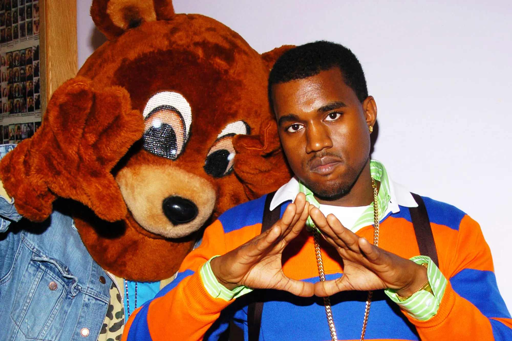
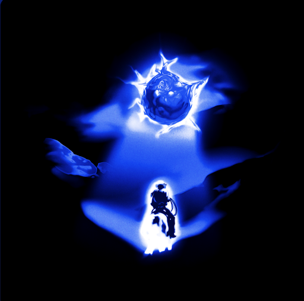
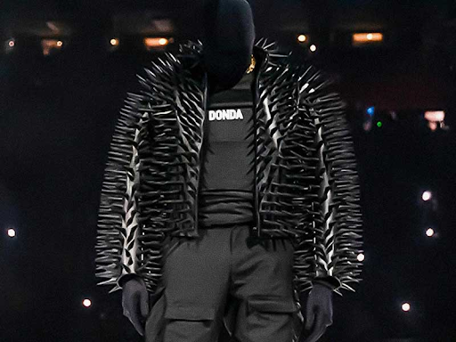
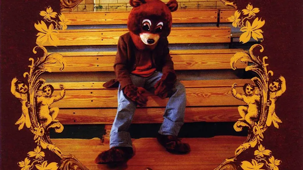
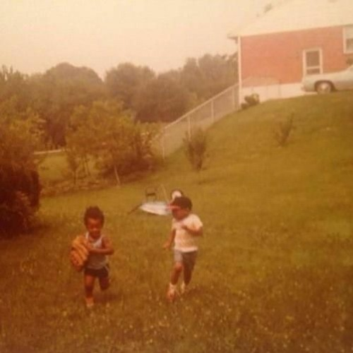
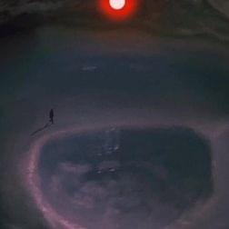

"Mama's Boyfriend" is one of the more popualr unreleased songs with it being seen as one of his best on the unreleased catalog.
It was rumored to be on Kanye's scrapped album "Good Ass Job" which later turned into MBDTF.
Many still hope that "Mama's Boyfriend" is released one day but it's highly unlikely due to how long it's been gone for.
Mama's Boyfriend V33:44

Home

"Future Bounce" was intended to release on "Donda" with it having many versions.
One of the more popular later versions has a Travis Scott feature on it which is phenominal.
It's assumed that Kanye scrapped the song and gave the beat to Travis for his song "Telekinesis" on "Utopia".
Future Bounce V22:32


"Fellas Gossip" was origanally planned to be on "The College Dropout" until it was scapped at some point. Not much else is known about it.
Fellas Gossip3:55

"It'll be a long time"

"Someday We'll All Be Free" is one of the most released unreleased songs out there.
It was released on Instagram as well as on Alex Jones' "Info Wars" website.
The reason why it wasn't releaed was due to sample clearing issues.
There is still a possiblity of release if Kanye changes the sample.